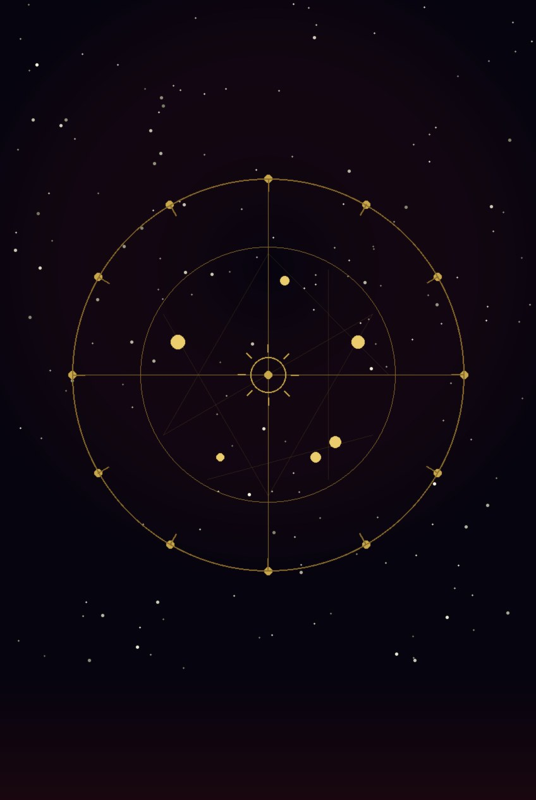
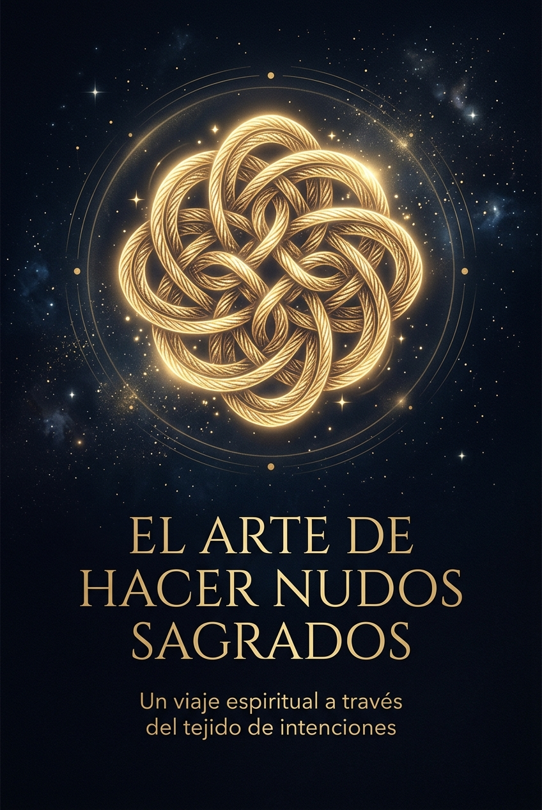
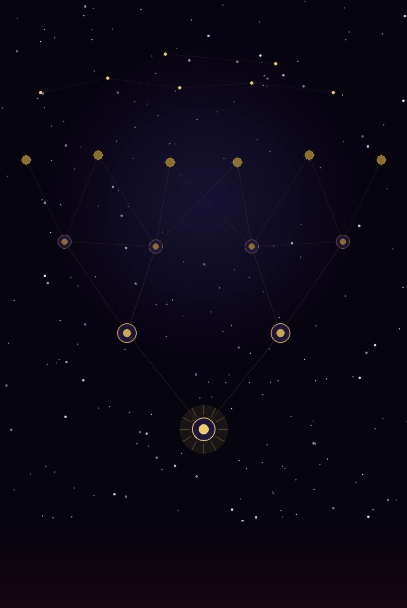

✦ Formación profesional
Programas diseñados para terapeutas holísticos, coaches y facilitadores que quieren ampliar su caja de herramientas con astrología, tarot y astrogenealogía desde una perspectiva terapéutica.
Formación integral para terapeutas que quieren dominar tanto la astrología terapéutica como el tarot en su dimensión psicológica y evolutiva. El programa más completo del instituto.
Cada curso puede tomarse de forma independiente o como parte del Programa Profesional.

Aprende a leer la carta natal desde la psicología profunda: arquetipos, patrones, recursos y procesos de transformación. Para terapeutas que quieren integrar la dimensión astrológica en su trabajo.

Aprende a interpretar los 22 Arcanos Mayores desde su lenguaje simbólico y arquetípico — no desde listas de palabras clave.

Descubre el significado y elaboración de nudos sagrados como herramienta simbólica de intención, transformación y manifestación.

Círculo de Sanación Femenina: Memorias del Útero. Un taller vivencial para honrar tu historia, conectar con tu linaje y reconectar con tu energía creadora.

La intersección entre astrología y constelaciones familiares: aprende a identificar patrones transgeneracionales en la carta natal y a trabajarlos desde la perspectiva sistémica.
No se requiere experiencia previa en astrología. Los cursos parten desde los fundamentos y tienen un enfoque práctico desde el primer módulo.
No enseñamos teoría desconectada. Cada módulo nace de años de trabajo real con consultantes.
🌙
Astrólogo terapéutico y consultor holístico. Especialista en astrología psicológica, astrogenealogía sistémica y lectura de carta natal desde el enfoque del autoconocimiento. Más de una década acompañando procesos de transformación personal.
Astrología Terapéutica · Astrogenealogía Sistémica
✨
Tarotista terapéutica e integradora energética. Su trabajo une el simbolismo del tarot con herramientas de acompañamiento emocional, creando un espacio de exploración profunda y no directiva. Formada en constelaciones familiares y reiki.
Tarot Terapéutico · Integración Energética
+15
años en programas de formación
+500
consultantes acompañados
3
disciplinas integradas
100%
enfoque práctico-terapéutico
Los cursos se imparten en grupos pequeños. Déjanos tus datos y te informamos sobre el próximo inicio.